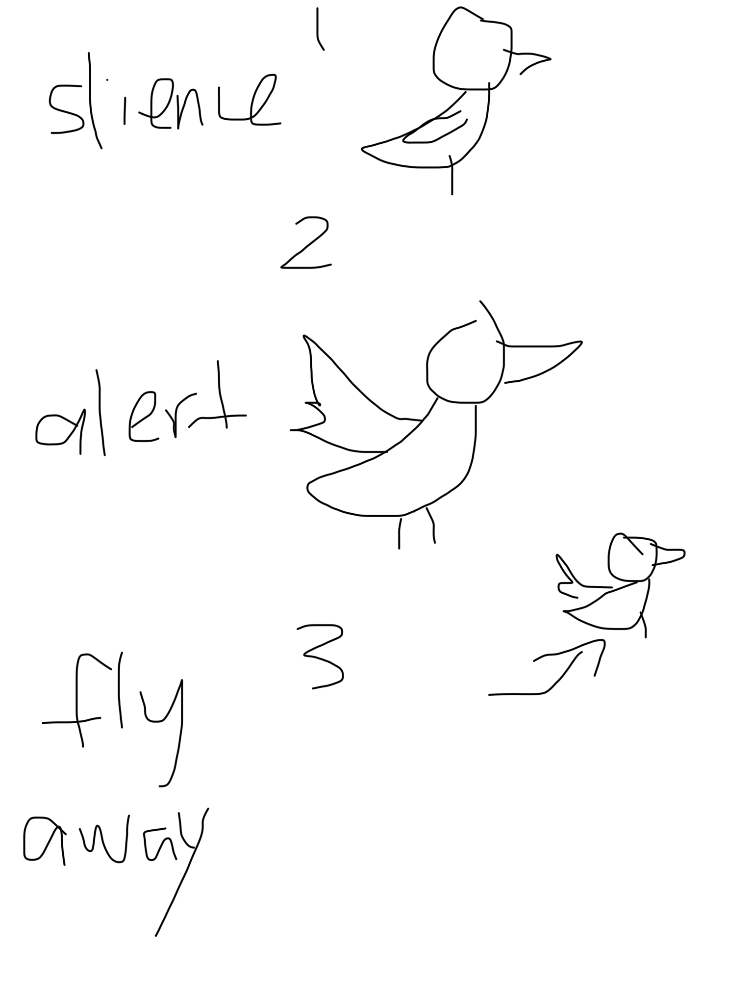

I designed a bird rests peacefully on a tree branch, reacting to the sounds in its environment. The artwork uses the computer's microphone to capture sound and analyze its volume and frequency. When the environment is quiet, the bird remains calm. As the sound gets louder, the bird becomes alert, flapping its wings and making chirping sounds. The louder the input, the faster its wings move and the louder it chirps. If the noise becomes too intense, the bird flies away. After a few seconds of silence, it returns to its branch. I just told the LLM what I want and it all tell me the things step by step. I wanted to explore how sound can influence behavior and create an emotional connection between the viewer and a digital character. Instead of using a traditional audio waveform or frequency bar graph, I translated sound data into the bird's movements, voice, and reactions. The project explores the relationship between noise and silence, encouraging viewers to become more aware of how their presence affects the environment. Silence becomes an active part of the interaction, allowing the bird to feel safe enough to return.
